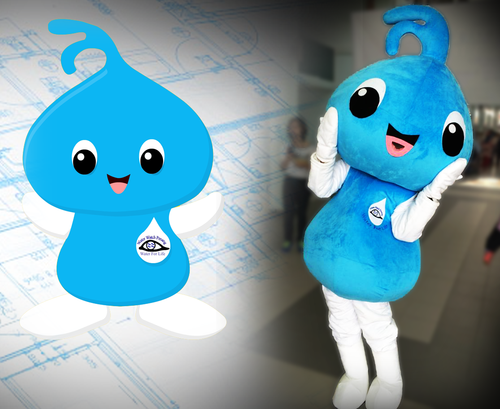
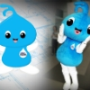

 
This jQuery slider was created with the free
EasyRotator for WordPress
plugin from DWUser.com.
OK
Rotator powered by
EasyRotator for WordPress
, a free and easy jQuery slider builder from DWUser.com. Please enable JavaScript to view.